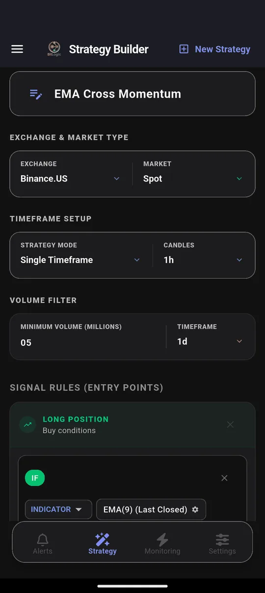
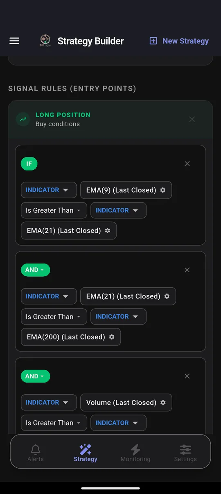
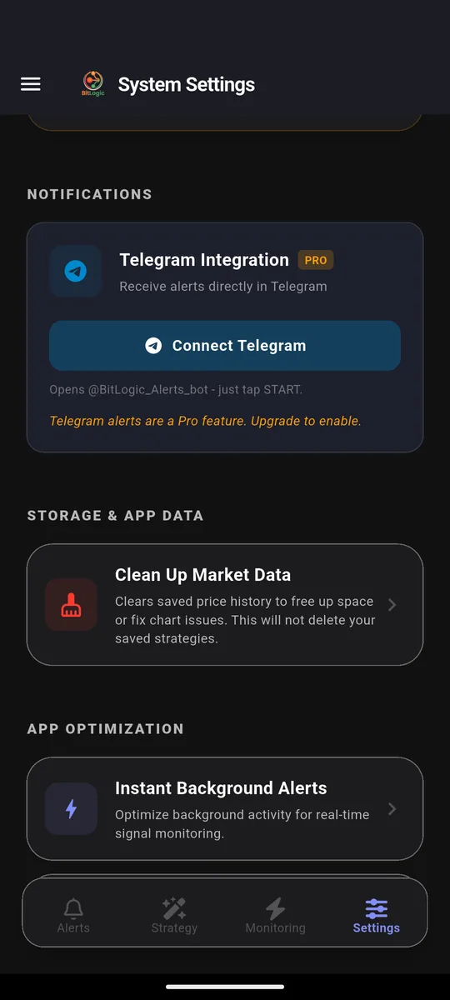

Binance.US Screener: How to Scan Every Binance.US Pair for Setups
Quick answer: Binance.com isn't available in the United States and blocks US connections, so US traders use Binance.US, a separate, US-only exchange. Like most exchange apps, Binance.US lets you buy, sell and track prices, but it has no screener that checks every pair against a technical rule. BitLogic adds one: it scans Binance.US's USDT and USD pairs against rules you build and alerts you on your phone when one matches.
BitLogic is a no-code crypto screener and alert app for Android and Windows, with a free web screener. It scans every pair on an exchange against rules you build and sends matches as push notifications, or as Telegram messages on Pro.
Features and state availability checked 7 October 2026.
Binance vs Binance.US: Which One Can You Use?
| Binance.com | Binance.US | |
|---|---|---|
| Available to US residents | ✗ No | ✓ Yes, in most states |
| Company | Binance (global) | BAM Trading Services (US) |
| Products | Spot, futures, options | Spot only |
| Market data from a US connection | ✗ Blocked (HTTP 451) | ✓ Works |
| In BitLogic | "Binance" | "Binance.US" |
If you're in the US, pick Binance.US in BitLogic. The "Binance" option reads Binance.com, which refuses US connections, so scans from the US won't load. Outside the US? See the Binance.com screener guide instead.
Is Binance.US Available in Your State?
According to Binance.US's own help centre (list dated 3 June 2026):
| Status | States and regions |
|---|---|
| ✓ Supported | Alabama, Arizona, Arkansas, California, Colorado, Delaware, District of Columbia, Florida, Hawaii, Idaho, Illinois, Indiana, Iowa, Kentucky, Louisiana, Maryland, Massachusetts, Michigan*, Minnesota, Mississippi, Missouri, Montana, Nebraska, Nevada, New Hampshire, New Jersey, New Mexico, Oklahoma, Pennsylvania, Puerto Rico, Rhode Island, South Carolina, South Dakota, Tennessee, Utah, Virginia, West Virginia, Wyoming |
| ⚠ Crypto only (no USD deposits or withdrawals) | Kansas, Wisconsin |
| ✗ Not supported | Alaska, Connecticut, Georgia, Maine, New York, North Carolina, North Dakota, Ohio, Oregon, Texas, Vermont, Washington, and several US territories |
*New sign-ups are paused in Michigan; existing customers can keep using Binance.US. Lists change, so check the help centre before signing up. If your state isn't supported, Coinbase, Kraken and Bitstamp are the other US-available exchanges BitLogic screens.
How to Screen Binance.US in BitLogic
Step 1: Pick Binance.US
In the Strategy tab, choose Binance.US. It is spot-only, so the market is Spot. BitLogic scans Binance.US's USDT and USD pairs, one pair per coin (whichever trades more), leaves out stablecoin-to-stablecoin pairs and anything that hasn't traded for two days, and ranks the rest by 24-hour volume.

Binance.US is a smaller market than Binance.com, so set the minimum-volume filter with care: high enough to skip pairs you couldn't fill, low enough that the scan still has something to check.
Step 2: Build or load a rule
Pick indicators and comparisons from menus. Every condition in a rule must be true for a pair to match:

Step 3: Scan
Tap Scan Market Now. Each match shows an entry, a take-profit and a stop-loss, calculated from the percentages you choose.
Step 4: Turn it into an alert
Live Monitoring re-runs the same strategy in the background (every 1, 5, 15 or 30 minutes, every 1 or 4 hours, or once a day) and notifies you when a new pair matches, even with the app closed. You can monitor up to five strategies at once. On Pro, the same alerts also go to Telegram: tap Connect Telegram, press Start in the bot, and you are done.

Screen Binance.US free on Google Play, or on Windows.
Three Rules for Binance.US Spot Traders
Binance.US is spot-only, so these rules look for entries. A Short rule still works as an "exit or avoid" warning on coins you hold.
1. RSI oversold, every pair at once
IF RSI(14) [1h, Last Closed] Is Less Than 30The most-requested alert, and one Binance.US's app can't set.
2. Pullback inside an uptrend
IF RSI(14) [4h, Last Closed] Is Less Than 40
AND Close [1d] Is Greater Than EMA(50) [1d]This finds a short-term dip while the daily trend is still up. Use Multi-Timeframe mode to mix the 4-hour and daily candles.
3. Volume breakout
IF Close [1h, Last Closed] Crosses Above Bollinger Band upper (20, 2)
AND Volume [1h] Is Greater Than Volume SMA(20) × 2A close above the band only counts when volume confirms it.
These are examples of what the builder can express, not trade recommendations.
Binance.US Timeframes in BitLogic
| Market | Timeframes |
|---|---|
| Binance.US Spot | 1m, 3m, 5m, 15m, 30m, 1h, 2h, 4h, 6h, 8h, 12h, 1d, 3d, 1w |
What BitLogic Won't Do on Binance.US
- It won't trade. BitLogic never asks for Binance.US API keys. It reads public market data only, and you place trades yourself.
- It isn't a charting tool. For drawing and deep chart work, keep Binance.US's charts or TradingView.
- It doesn't check your state. BitLogic can read Binance.US data from anywhere; whether you can trade there depends on where you live.
FAQ
Is Binance.US the same as Binance?
No. Binance.US is a separate US company that offers spot trading to US residents in supported states. Binance.com is the global exchange; it isn't available to US residents and blocks US connections.
Which states can use Binance.US?
Most states can. As of June 2026, Binance.US didn't serve Alaska, Connecticut, Georgia, Maine, New York, North Carolina, North Dakota, Ohio, Oregon, Texas, Vermont or Washington; Kansas and Wisconsin were crypto-only; and new sign-ups were paused in Michigan. Check Binance.US's help centre for the current list.
Does Binance.US have a screener?
Binance.US offers market lists and price tracking but no screener that checks every pair against your own technical rule. BitLogic adds that, and can re-check every pair automatically with Live Monitoring.
Does BitLogic need my Binance.US API key?
No. BitLogic reads Binance.US's public market data only and never places trades.
Can I get Binance.US alerts on Telegram?
Yes. BitLogic Pro sends every Live Monitoring match to Telegram after a one-tap connection.
How much does BitLogic cost?
Scanning, the rule builder, Live Monitoring and push alerts are free. Guests get 3 scans per 24 hours, and a free account removes the limit. Pro adds Telegram delivery, an ad-free app, live monitors without an ad and priority support for US$4.99/month or US$49.99/year (2 months free), with a 14-day free trial.
The Bottom Line
For US traders, Binance.US is the Binance you can actually use. It is spot-only, available in most states, and too big to watch by hand. A screener checks every pair for you, and Live Monitoring keeps checking.
Download BitLogic free on Google Play and point your first rule at Binance.US.
Nothing here is financial advice. BitLogic is not affiliated with Binance.US. State availability changes, so check Binance.US's help centre before you sign up.